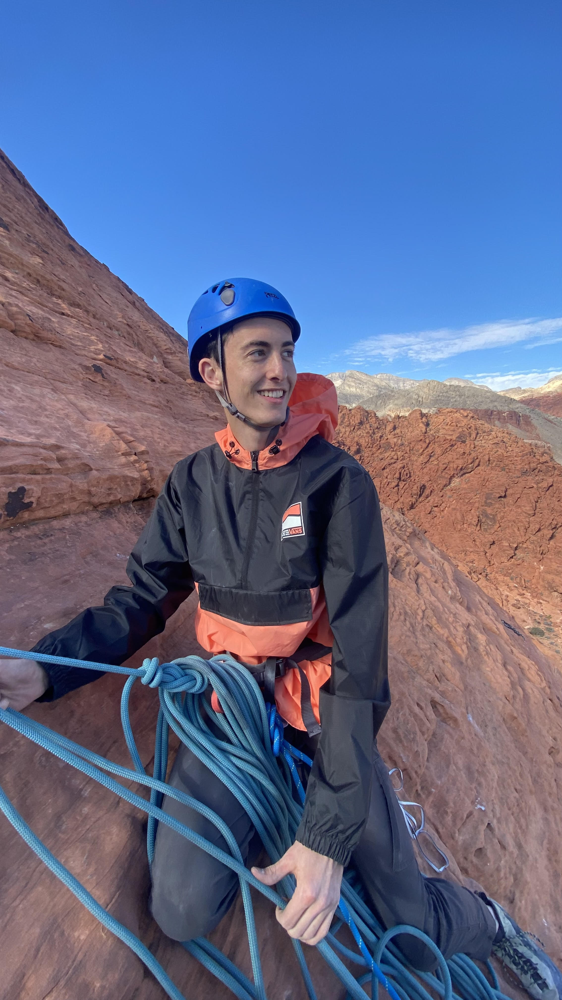

About Me
Hi, I'm Cade Smith, welcome to my online portfolio! I'm a young GIS professional and recent graduate from Brigham Young University with a degree in Geographic Information Systems. I'm passionate about using GIS to solve real-world problems and create aesthetically pleasing and informative maps. Throughout my coursework at BYU and my work experiences, I have learned about spatial data analysis, and become proficient in ArcGIS Pro, Python, and web mapping technologies. I love spatial data and sharing it with others. When I'm not working on GIS projects I enjoy rock climbing, fishing, and travelling anywhere I can with my wife Lauren.
